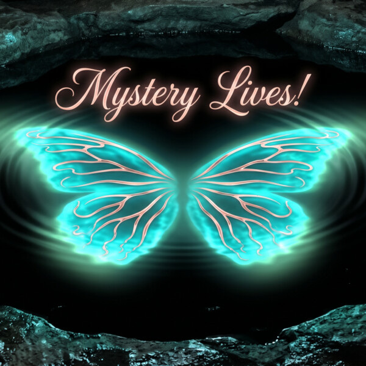

About
I chase knowledge the way some people chase promotions — it’s just how I’m wired. I never stop asking why. I am blind, a 12-year talent acquisition professional, and a passionate daily AI collaborator. I use JAWS, NVDA, and VoiceOver to navigate every digital tool I touch.
I am a natural conversational designer. I think out loud, type unfiltered, and constantly refine how AI communicates through real-time interaction. This is not a learned technique — it is how my brain works.
My blindness is a lens that makes me better at this work. When I navigate technology through a screen reader every day, I catch things sighted users never think to test. Combine that with 12 years of talent acquisition instinct, and you get someone who brings the human perspective to a field that desperately needs it.
AI Collaboration Portfolio
MediTrust: First Shipped AI-Directed Production
MediTrust is a professional narrated presentation built entirely through human-AI collaboration. It was produced under Spiritbird Productions™ as its first shipped product. The client called the final deliverable “Phenomenal.”
How it was built: Every element of MediTrust was directed through conversation with AI: the research, the script, the slide design, the narration, and the final packaging.
What this demonstrates:
- Production direction: Ability to direct complex, multi-format production through AI
- Real output: Real deliverable shipped to a real client — not a demo or exercise
- Conversational workflow: Iterative refinement through conversation, not code or visual editing
- Business context: Built through Spiritbird Productions™, establishing a production entity
Memory Book: Large-Scale Photo & Video Archival
A large-scale digital archival project produced through Spiritbird Productions™ for a client preserving a family member’s legacy. Over a thousand photos and videos catalogued, organized by timeline, and delivered as a browsable gallery — all directed through AI collaboration.
What this demonstrates:
- Project management at scale: Organizing and cataloguing a massive media collection into a structured, navigable archive
- Client engagement: Ongoing production relationship with iterative delivery, client feedback, and evolving scope
- AI-directed workflow: Every step — from ingesting raw files to sorting, categorizing, and building the final gallery — was directed through conversation
- Business growth: Demonstrates Spiritbird Productions™ expanding from one-off deliverables to sustained client engagements
Startup Investment Proposal: Business Planning & Financial Modeling
A comprehensive startup investment proposal developed for the launch of Spiritbird Productions™. Built through iterative human-AI collaboration, refined across three versions based on stakeholder feedback.
What this demonstrates:
- Financial modeling: Structured a complete business investment case including compensation, startup costs, debt management, and two-year projections
- Stakeholder-driven revision: Iterated from a detailed first draft through three versions, incorporating feedback from multiple reviewers with different priorities
- Strategic communication: Adapted the same core information for different audiences — balancing transparency with discretion based on stakeholder needs
- Business context: Developed as part of the formal launch of Spiritbird Productions™ as an independently funded creative production and AI consulting business
Conversational AI Design
I design through conversation. Not mockups, not wireframes — dialogue. Every product I have built started as a conversation with AI, evolved through hundreds of iterations, and was refined through daily real-world use by a screen reader user who catches every interaction failure sighted designers miss.
My design process: I identify where a conversation breaks down, redesign the interaction in real time, and build persistent rules that govern how AI behaves across sessions. I have authored automation hooks, standing instructions, and conversation logic that determine when AI speaks, what it says, and how it formats responses for accessibility. This is not prompt engineering as a party trick. It is systems design through natural language.
Websites built entirely through AI conversation:
I designed and launched two live websites — this portfolio (johnagravitt.github.io) and spiritbird.live — entirely through iterative conversation with AI. No visual editor. No templates. No sighted assistance. Every design decision — color palette, layout, heading structure, WCAG AAA compliance, image placement — was directed through dialogue, tested with a screen reader, and refined until it worked. A blind person building and shipping production websites through conversation is conversational AI design in its purest form.
Products I co-designed through daily interaction:
- Music Studio: A fully accessible, browser-based audio production environment. Used for real client work including stem separation, remixing, vocal isolation, and mix engineering.
- Cookbook: A digital cookbook with hundreds of recipes, organized by category, searchable, and designed for screen reader navigation. Built to become a family heirloom.
- Health Tracker: A wellness tracking system with compound profiles, dosage data, session logging, and personal insights — hundreds of sessions logged and growing. Designed through real daily use.
- Game Room: Accessible brain games designed for screen reader users, including word games and trivia formats built for cognitive engagement.
Production and research work:
- FIA Content Curation: Researched, compiled, and organized 19 Friends in Art recordings spanning 2016 to 2025 from ACBMedia.org archives. This involved identifying, verifying, and structuring audio content for accessibility and preservation.
- Radio Clip Archival: Identified and extracted personal radio appearance clips from live broadcast recordings — locating specific moments entirely by ear and memory, navigating dynamic ad insertion that shifts timestamps between listens, and directing AI to produce clean, isolated clips. Research, audio curation, and production direction — all through conversation.
- Audio Tour Creation: Designed and produced an AI-generated audio tour for spiritbird.live — creating an accessible, guided experience for visitors. This is accessibility-first content design: not testing what others built, but building what should exist.
-
Blurred Lines Podcast: Currently in production — a music-centered podcast that explores why songs matter to people and the personal connections behind them. Features conversations with everyday people, each guest given a platform to share something they’re passionate about. All production directed through AI collaboration: guest coordination, episode planning, cover art, and recording setup.

The pattern across all of it: I direct AI through conversation across everything I do — from audio production to job search strategy, document creation, professional communication, and research. This is not button-clicking. It is creative direction through dialogue — the same skill set that drives conversational AI design, applied to real life.
Accessibility + AI
Accessibility is not just about blindness. It is about every disability, every barrier, and every assumption baked into technology that someone forgot to question.
What I catch that others miss:
- Screen reader expertise: I test every AI interface with JAWS, NVDA, and VoiceOver. I know when a heading structure is broken, when a button has no label, when a workflow assumes sight.
- Practical solutions: I do not just flag problems. I describe exactly what the fix should be — in plain language a developer can act on.
- AI output evaluation: I evaluate AI outputs not just for accuracy but for accessibility: Does this actually work for someone who can’t see the screen?
Disability is a strength in this work, not a checkbox. What I navigate every day is exactly what makes AI products better for everyone.
AI Tool Fluency
I work across multiple AI platforms daily, not as a casual user but as someone who pushes each tool to its limits and understands where one ends and another begins.
- Prompt engineering: Crafting precise, iterative prompts that get specific results. I know how to guide AI toward the output I need, and how to adjust when it misses.
- Image generation: Directing AI image generation for professional and creative outputs, including product visuals, presentation graphics, and artistic concepts.
- Conversational design: Shaping AI behavior, personality, and response patterns through sustained interaction. Building AI personas that are consistent, useful, and human.
- Accessibility testing: Navigating and stress-testing AI tools with assistive technology, identifying accessibility barriers, and providing actionable feedback.
I don’t just talk to AI. I make AI better.
The partnership is the product.
Listen: Voice and Performance
My resume can tell you I work with my voice. These recordings let you hear it. Everything below is my own voice: talkback messages played on Pittsburgh's 96.1 KISS FM morning show, and live performances at Sunnyhill Unitarian Universalist Church. Every clip includes a transcript.
On the Radio: 96.1 KISS FM
Talkback messages I record through the iHeartRadio app get played on The Mikey and Big Bob Morning Freak Show on 96.1 KISS FM in Pittsburgh, where I am known on air as Mystery. I have never been in their studio. Hearing my clips played back, and interacting with this radio community, is pure nostalgia for me. I'm a radio girl at heart; it echoes my old DJ days on internet radio. These clips are my messages exactly as they aired, with the hosts talking back.
Say Something Nice, October 15, 2026 (1 minute 17 seconds)
My most recent talkback played on the show: a shout-out dedicated to a fellow listener, with the hosts reaction after it.
Transcript: Say Something Nice, October 15, 2026
[Station ID and segment jingle: "Mikey and Bob here on 96.1 KISS. Time to say something nice. Say something nice!"]
Mystery: This one goes right out to Aunt Caca. You make my day. Yes, I heard your wine glass. Yes, I wish I had some. And no, I don't watch the show, but yes, Masshole is the term. I spent 14 years in Rhode Island and absolutely agree.
Hosts: That was Aunt Caca. She's been recapping Love Is Blind Boston for us. I agree. When Aunt Caca takes us on an adventure with her, we go right with her. It's great. Not sure she's sober. She was drinking wine, at least.
Singing on Air, June 26, 2026 (2 minutes 52 seconds)
A talkback I sang for the hosts: an original parody of the Sesame Street Rubber Duckie song, rewritten about their show. They liked it enough to play it again and sing it back, then kept the bit going for two more minutes.
Transcript: Singing on Air, June 26, 2026
Host: Right now, let's get to another talkback message.
Mystery (singing): Hey, Mike and Bobby, you're the one, you make my morning so much fun. I turn you on and laugh all day, well, at least until 10 o'clock and you go away.
Hosts: Wow. That is like our own Rubber Duckie song. That is Ernie's Rubber Duckie song from Sesame Street. [They sing her version back, then continue riffing on the song for the rest of the clip.]
Say Something Nice, July 23, 2026 (1 minute 1 second)
A good morning message for the hosts, and their reaction. They decided I must have been using my inside office voice.
Transcript: Say Something Nice, July 23, 2026
[Segment jingle: "Say something nice!"]
Mystery: Hey, boys, good morning. I'm saying something nice to you. You guys are amazing. I love listening to you every morning. You make me laugh every morning. I don't know what I'd do without you guys. Have a great day, Mikey and Bob.
Hosts: You know what? That's right. We set the tone for the day. You have a great day. [Later:] Where are they, inside office voice, by the way? That does sound like office lady. Like, I can't talk too loud, but you guys make me laugh every morning.
Live Performance: Sunnyhill UU Church
Live recordings from services at Sunnyhill Unitarian Universalist Church, where I have performed since 2013 as a singer, storyteller, and speaker.
Sermon Excerpt: Hope, Forgiveness, Joy, July 14, 2024 (2 minutes 36 seconds)
The closing passage of Reflections on Life, a full sermon I wrote and delivered at Sunnyhill. This is sustained public speaking: my own words, delivered live to the congregation.
Transcript: Sermon Excerpt
Over the years, I have learned a lot about hope. I have learned a lot about forgiveness. And I have learned a lot about finding joy. Through our actions, either directly or indirectly, we can have an impact on those around us. I strongly believe that we all have a purpose on this earth, and we may never truly know what that is, but I get a sense of it each and every time I give of myself to others. Providing happiness and comfort to those around me is something I strive to do every day. I am a giving person, because I have realized that when I give of myself to others, I feel good. I believe in small acts of kindness and being generous with my time. Because we are not in this world alone and everything we do has an impact. We only have one life to live, and each day we have a choice to make: we can spend our lives dwelling on the things we don't have, or do our best to live each day to its fullest. I have learned that life can be hard, and I am a work in progress, and that is completely fine. I am ok with who I am. And I choose Joy! Let your inner child speak to you, try to find that sense of wonderment and joy. My wish for all of you today is that you can find something to be hopeful and joyful about. My hope for all of you as you leave here today is, if you are struggling with forgiveness, just try to remember that forgiveness doesn't make the other person right, it makes you free. So I want you all to go in peace, go with joy, and go in love. Thank you.
The Blind Men and an Elephant, Story for All Ages, July 23, 2017 (3 minutes 57 seconds)
Telling a story to the children of the congregation, with no book and no pictures. I asked them to close their eyes and imagine, the way I experience every story.
Transcript: The Blind Men and an Elephant
[Introduction:] Hi, and now it's time for our story. If there are any kids that want to come up? There's a dog up here. That's okay.
Johna: All right, hi. Good morning. So I don't have a storybook for you to look at pictures. So I'm going to have you guys all close your eyes and imagine, as I tell you this story. It is an elephant and the blind men.
Once upon a time, there were six blind men living in a village. And one day, the villagers came to them and said, there's an elephant. So the blind people were like, hey, we don't know what that looks like. Let's go feel it. Let's go see what it feels like. So the first blind man touches it and says, it's a big pillar, as he's touching the leg. The second blind man says, no, it's a rope, as he's touching the tail. The third blind man says, it's like a pipe, as he's touching the tusk. Fourth blind man says, it's like a big hand fan, as he's touching the ear. Fifth blind man says, it's like a huge wall, as he's touching the belly. And the sixth blind man says, no, it's like a thick tree branch, as he's touching the trunk.
So they all had differing opinions and beliefs as to what they felt like they were touching. So they started arguing. Well, this wasn't good. And a wise man came along and heard them arguing, said, oh, no, what's wrong? So the blind men told him, well, he thinks the elephant's this and he thinks the elephant's this, and who's right? Well, the wise man says, you're all right. You each touched a different part and said what it felt like to you. And the blind men were so happy. Oh, we're right. We're all right. Let's not fight.
So the moral of this story really is that sometimes people say things that you may not agree with, but they still have some truth. It's just the way that people view things. And the best way to not have an argument if you disagree with someone is to just say to yourself, they have their own beliefs and I will accept them for that. Now we'll sing you out. [Closing song: "This Little Light of Mine," ending "Let it shine."]
The ADA Anthem, October 2020 (3 minutes 18 seconds)
A duet with Jim Magaw, who accompanies on guitar, recorded for Sunnyhill's Disability Rights service in October 2020, marking 30 years of the Americans with Disabilities Act.
Transcript: The ADA Anthem (lyrics)
In the disability rights movement, we're the streams of constant change, for the worse and for the better, in flux it had remained. To move it with decision towards human dignity, we gathered as one, there was work to be done, for we held only part of the key.
ADA, we stand as one to see it through. ADA, civil rights overdue.
But to shape new legislation, based on laws as their place, bringing power to the people whose lives these things embraced. So we formed a coalition, and the system surely moved. So today it's the ADA, and the balance has improved.
ADA, we stand as one to see it through. ADA, civil rights overdue.
For those who are disabled, a change has been perceived, a freer step across this land on the road to liberty. So we sang this song together, 30 years ago this year, and still a journey we share, as together we care. The ADA is gold, sweet and clear.
ADA, we stand as one to see it through. ADA, civil rights overdue. ADA, we stand as one to see it through. ADA, civil rights, very long overdue.
Credentials
- Google AI Professional Certificate — all 7 courses completed (Coursera, 2026)
- Verizon Digital Ready — AI and digital business courses completed (2026)
- Passionate daily AI collaborator — continuous, documented human-AI partnership
- Accessibility research panelist for a major technology platform — providing paid UX feedback that shaped product design
- 12 years in talent acquisition across recruiting, talent operations, and workforce development
- JAWS, NVDA, and VoiceOver power user — daily screen reader expertise
- Active AI practitioner across productivity, creative production, research, and accessibility testing
- View full professional profile on LinkedIn
Spiritbird Productions™
Spiritbird Productions™ is the creative studio behind everything I build. From professional presentations to large-scale digital archival and audio production, every project is crafted with intention, accessibility, and a commitment to amplifying voices that deserve to be heard.
What started with MediTrust — the first shipped client project — has grown into an active production studio with ongoing client engagements, a professional rate card, and a growing portfolio of real work delivered to real people.
Audio & multimedia production: Work spans the full range of AI-directed audio and multimedia creation — from stem separation and remixing for client recordings, to video-to-audio extraction, sound design, and layering environmental audio into narrative projects. Production includes building soundscapes with real-world audio clips, combining imagery with sound and motion, and directing every element through conversation.
Narrative audio projects include a narrated client presentation with AI-generated voice production, an accessible audio tour guiding visitors through spiritbird.live, and a podcast pilot exploring the personal stories behind the music people love — all produced entirely through human-AI collaboration, from script to final mix.
Live radio clip archival involves identifying specific moments from hour-long broadcast recordings entirely by ear and memory, navigating dynamic ad insertion that shifts timestamps between listens, and directing AI to produce clean, isolated clips. Research, audio curation, and production direction — all through conversation. That process is conversational AI design in practice, applied to real creative work.
Born to Fly, Built to Create